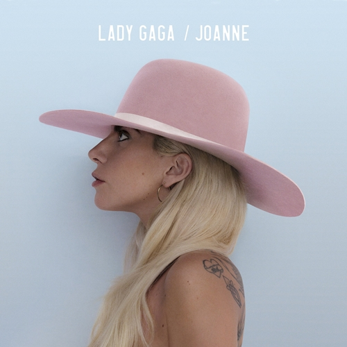

Lançamento:
21 de outubro de 2016
Gênero(s):
Soft rock - Dance-pop
Duração:
39:05
Idioma(s):
Inglês
Gravadora:
Interscope
Produção:
Lady Gaga - Mark Ronson - Jeff Bhasker - BloodPop - Emile Haynie - Josh Homme - Kevin Parker - RedOne
Crítica Musical
Joanne obteve uma recepção crítica positiva, com analistas elogiando o novo estilo musical de Gaga e o foco em seus vocais, bem como a produção e os vários estilos musicais englobados no projeto; alguns, porém, notaram falta de autenticidade. O portal Metacritic, com base em 27 resenhas recolhidas, concedeu ao álbum uma média de 67 pontos, de uma escala que vai até cem, indicando ''análises geralmente favoráveis''. Avaliando o álbum com quatro estrelas de cinco, Neil McCormick, do jornal britânico The Daily Telegraph, elogiou as obras antiquadas presentes nele, comentando: ''Com grandes canções e grande produção, Joanne certamente soa como algo interessante. Mesmo quando sua modernidade é expressa pela mistura e combinação de gêneros ou adição de zunido digital aos tropos familiares, por toda a sua bravura exuberância e destreza pop é muito antiquado a sua essência''. Dando a mesma nota, Lewis Corner, do portal britânico Digital Spy, avaliou: ''Joanne é claramente o disco mais pessoal de Gaga, colocando de lado os personagens sintéticos para algo mais honesto e, bem, humano... A Mother Monster pode estar aposentada por enquanto, mas o brilho musical de Lady Gaga ainda continua''.